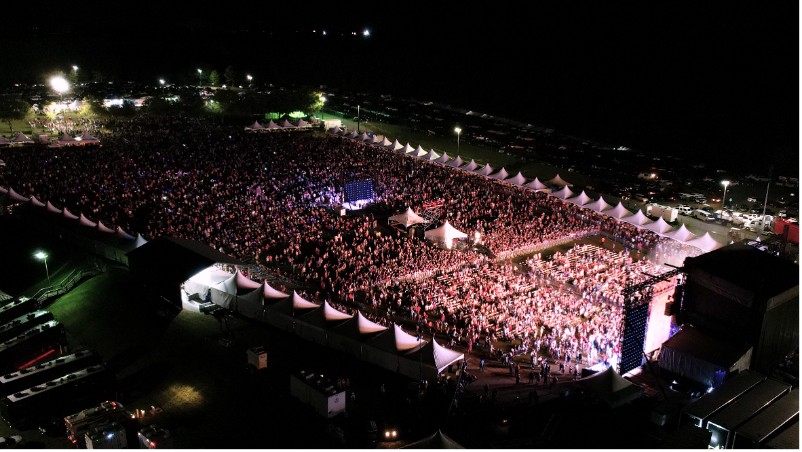
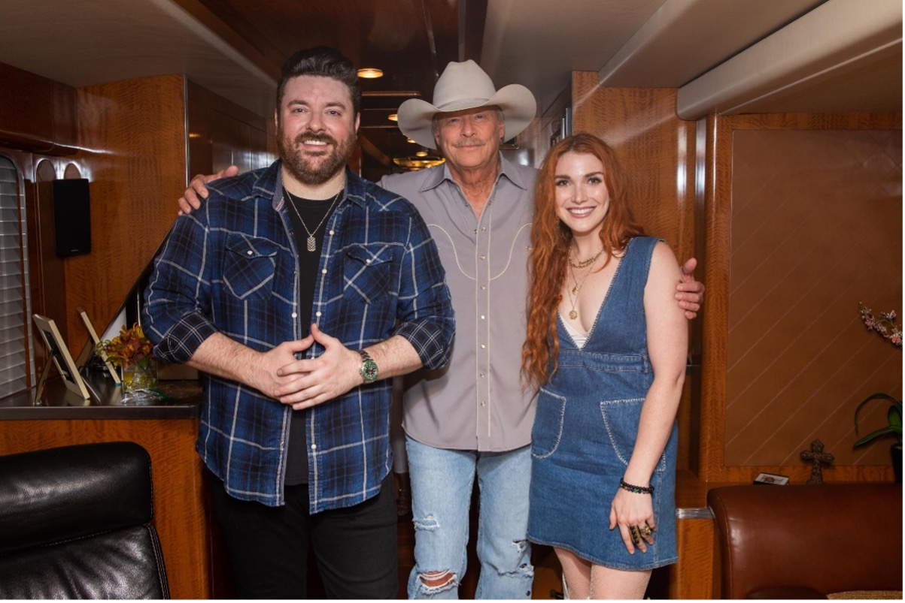
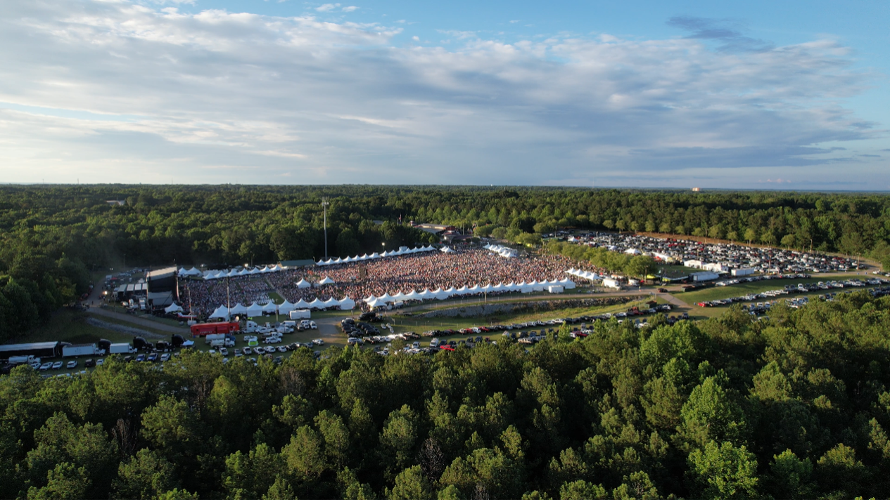

ALAN JACKSON BRINGS HOPE AND HELP TO HIS HOMETOWN

Country superstar Alan Jackson returned to “Where I Come From” Saturday, headlining a huge day-long concert event in his Georgia hometown, raising money and awareness to assist residents whose lives were upended by a massive EF-4 tornado just three months earlier.
“It’s good to be back down here in my hometown of Newnan, Georgia,” Jackson told the crowd of over 20,000. “I’m from Newnan…my wife, Denise, is from Newnan…we were both born and raised here…and all of our childhood and young adult memories come from this area. When we saw what that tornado did coming through here a few months ago, it broke my heart. It broke Denise’s heart. We had relatives affected by it and friends. The high school that we went to got hit. I was hoping we’d be able to do something to try to help down here and…it’s just been amazing how this community came together to make this happen.”

What happened was a concert event that became a music festival, celebrating what can happen when people come together to support a common goal – a day of country music that thus far has already raised an estimated $2,000,000 for tornado relief. Jackson’s headlining set was preceded by multi-platinum entertainer Chris Young, singer-songwriter-producer Caylee Hammack, Grammy nominated singer-songwriter Adam Wright and country artist Brian Wright, the latter two both – like Jackson – Newnan natives. Jered Ames from Jackson’s downtown Nashville honky-tonk, AJ’s Good Time Bar, and local artists Corbette Jackson and Will Finley entertained early in the afternoon as concertgoers filled the Coweta County Fairgrounds. College Football Hall of Famer David Pollack from ESPN’s College GameDay emceed. Proceeds from the event benefitted the Coweta Community Foundation’s tornado relief fund.

“This was a great day,” Jackson noted. “A lot of people dedicated their time here, volunteering. It takes a lot to put on a show this big, and we really are grateful to all the help. Most of all, we appreciate all of you people that have come out and help all these folks in need.”
Jackson’s headlining performance was livestreamed exclusively on Facebook, where it’s been available to view all weekend (and can be viewed until Tuesday at 12:00am ET), reaching nearly 1,000,000 fans worldwide and allowing them to contribute to the fundraising efforts. Donations can still be made via Facebook, by phone (text “Give” to 844-737-4859), via Venmo (@CowetaFoundation) or the Foundation’s website (CowetaFoundation.org/concert).

During the concert, presenting sponsor Cornerstone Building Brands contributed over half-a-million dollars to the efforts, presenting the Coweta Community Foundation with a check for $100,000 to support tornado relief efforts and committing $500,000 in building materials to Habitat for Humanity for use specifically in Newnan and Coweta County as tornado recovery and rebuilding efforts continue.
Title sponsor Southtowne Chevrolet, based in Newnan, also made a presentation of $105,000 to the Foundation’s tornado relief efforts.
Jackson’s headlining performance found the Country Music Hall of Fame member and three-time CMA Entertainer of the Year doing what he does best – giving the audience a night of real country music highlighted by the biggest hits of his three-decade career…22 songs in total. It was Jackson’s first concert since staging a pair of shows last June – “drive in” style concerts that allowed people to safely enjoy music in an outdoor setting in the early days of the pandemic. Jackson returns to the road in the coming weeks, starting with an Ohio festival performance in July followed by a slate of concerts through August, September and October.
Watch a recap video of the concert!
Artist photos credit: Katie Kauss
Aerial photos and video credit: Andy Kaefer